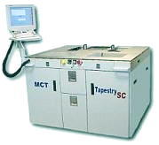

Strip Testing
Strip Testing
refers to
the process wherein semiconductor devices are electrically tested while
they are still in their lead frame strips, i.e., before they are singulated into individual units. Prior
to testing, however,
the devices in the strip have already undergone the lead
trimming process for electrical isolation of their
leads.
Strip testing promotes
parallel testing of multiple units at the
same time, increasing test throughput and reducing test cycle time. After strip testing, traditional end-of-line operations are performed, including mark, device
singulation, vision sort, tape and reel, packing, labeling and shipping.
Strip
testing is also sometimes referred to as
'matrix testing'. However, this
can lead to confusion because the same phrase is used by some people to
refer to a different (and more conventional) testing process that
employs trays or carriers to hold singulated units in matrix
arrangement.
Strip testing is a
relatively new test process that is not applicable to all semiconductor
packages. In semiconductor manufacturing, assembly or packaging is
traditionally kept separate from testing, which is done only after the
units have been singulated. Since strip testing requires that singulation be
performed only after the units have been tested, it is in effect inserting the
test process within the assembly process. The birth of strip
testing, therefore, is a paradigm shift that ended the era of keeping
assembly isolated from test.
Strip testing
offers many benefits, especially in relation to recent advances in
semiconductor manufacturing technologies. For instance, one of the major issues
addressed by strip testing is the difficulties of handling very small
packages (such as the chip scale
packages or CSP's) after these have been singulated.
Very small
packages are difficult to handle, process, and test individually. An
integrated assembly/test process involving strip testing keep these
packages intact in their lead frame strips for majority of the
manufacturing steps, eliminating direct handling of the individual units
until they are singulated.
This reduces
the occurrence of
handling-related issues like bent leads, package cracks, missing units,
ESD damage, and the like. Aside from
the more protected environment that the strips provide to the units,
strips are also much easier to handle and process than individual
devices.
Another
advantage of strip testing is significant reduction in test cycle time, not only because of its parallel
testing capability, but also because of the more efficient matrix indexing
scheme that it employs. A single indexing step affects many units,
whereas conventional serial processing will only affect a single
unit at a time.
Strip testing has also
successfully addressed the high cost of testing products that have
short life cycles. This is especially true for CSP's which,
strictly speaking, needs to downsize its package dimensions every time
the die is shrunk significantly to keep it in scale with the chip's new
size, resulting in very short package life cycles. Short life
cycles present a problem in the conventional test
process for singulated units, because every significantly new package
style and size necessitates the fabrication of a new set of tools and
accessories, such as trays and sockets.
Such
retooling and reacquisition of new accessories when an old package
changes or a new one arrives is not a problem for the strip-test
process, since it uses robotic strip handlers and alignment technology
that can be reprogrammed to adopt to the new package configurations.
'Package-independent' testing should in fact be a major consideration of
anybody setting up strip testing capability.
Strip testing
also facilitates
lot tracking,
since all devices are secured in their strips and can be precisely
registered and identified by software, in the same way that die are
tracked on a wafer map during wafer probing. In fact, there is
such a thing as a strip map, the strip testing equivalent of a wafer
probe map. Strip maps are used to record important data related to
the lot and individual units on the strips. Strip mapping is very useful
in lot traceability from assembly to test, troubleshooting, yield
analysis, and statistical process control.
Amkor was the first
semiconductor manufacturer to implement a high-density pre-singulation
test process for many common IC packages, having achieved this by
utilizing its high-density leadframe (HDLF) assembly technology in
high-parallelism testing. Amkor has been doing matrix testing in volume
production since February, 1999.
According to Amkor,
the
benefits
of strip testing include:
- reduced
cost of test primarily from high degree of parallelism;
- reduced
cycle time from testing in line with assembly;
-
consistently higher yields than singulated test (better contact
methodology);
- higher
quality from reduced handling (reduced bent leads);
- faster time
for test development;
- part
traceability to assembly;
- high strip
density (up to 400 devices per strip);
- reduced
floor space;
- better
equipment utilization;
- significant
reduction in test capital expenditures;
- immediate
feedback to assembly.
|
 |
|
Figure 1.
Example of a Handler System used in Strip Testing
|
Strip
testing, like any technology, has its own
disadvantages.
For one, it requires heavy reengineering of existing lines for its
effective adaptation. Secondly, assembly-test integration
loses some of the flexibility offered by having both processes
independent of each other. An assembly house that already has hundreds
of different package configurations and sizes would have second thoughts
about re-engineering its assembly production floor so that it can be
integrated into a new strip-test process.
Another problem associated
with strip testing is difficulty of retesting or rescreening fall-outs
from an initial round of electrical testing. Some of these initial
fall-outs are invalid failures for one reason or another, which can be
recovered by simply retesting them. Depending on the level and
nature of the yield loss, there comes a point wherein it is more
profitable to retest the failures and recover the invalid failures.
This is easy to do when dealing with singulated units, since one can
simply segregate and retest singulated rejects.
Strip retesting,
unfortunately, is just like a second round of strip testing - the entire
strip will have to go through the strip test process again, because
that's how this parallel testing approach is set up. Thus, even
the good units in the strip get an extra 'handling' that they no longer
need, potentially affecting their quality.
One solution offered for
this problem is to just perform the retest on the rejects after
singulation, this time using a test system for singulated units. Leaving
the rejects unmarked makes them identifiable for this retest.
Another
drawback of strip testing is the higher risk of units being damaged
after electrical testing, which can reach the customer if OQA is not
able to detect the problem. The higher risk is simply due to the
number of critical manufacturing steps that the units still need to
undergo after they've been subjected to final test. Thus, it is
necessary to conduct strict process evaluations and qualifications to
ensure that steps following strip testing (notably singulation) will not
induce any damage to the units.
Other
challenges
for strip testing include the following:
1) design and
fabrication of lead frames that would allow proper debussing (trimming
or isolation) of all the leads of
very high pin count devices without
detaching the units from the strip;
2) design of
contactors with very precise alignment capabilities;
3) design of
strip test modules that can adapt to as many packages as possible;
4) resolution
of high mechanical force problems associated with connecting a high
number of pins at the same time;
5) design of
effective temperature soaking systems for correct thermal conditioning
of units prior to temperature testing;
6) power and
thermal management for parallel testing of multiple high-power devices;
7) reduction
of cross-talk between the devices under test;
8) better
understanding of ESD phenomena associated with the new strip test
set-ups.
The following
excerpts from a press release taken off the internet illustrates how
strip testing is currently implemented by its originator, Amkor:
"In a cooperative effort, the three companies will be
jointly exhibiting the Amkor-developed strip test process using an MCT
Tapestry(TM) automated strip handling system integrated with a Nextest
Maverick II GT digital tester....
By combining standardized strip handling tooling and
robotics, new generation test systems, and simplified contactor
methodologies, this new process allows massively parallel test at full
device operating speeds. Devices are tested in groups of 16, 32, 64 and
up to 128 devices at one time while also increasing quality and test
yields. Test costs can be reduced by 50% or more due to the high
parallelism and fast handler index times. Test yields can increase by 5%
due to more reliable contact methodologies, and bent leads can be
virtually eliminated, since the contacting of the device leads during
test now occurs prior to the lead form operation.
Amkor currently has several of the combined (MCT/Nextest)
strip test systems in production and has tested over 200 million units
in strip test form."
Test Links:
Electrical
Test;
Burn-in
See Also:
CSP; IC
Manufacturing; Test Equipment
HOME
Copyright
©
2001-2006
www.EESemi.com.
All Rights Reserved.